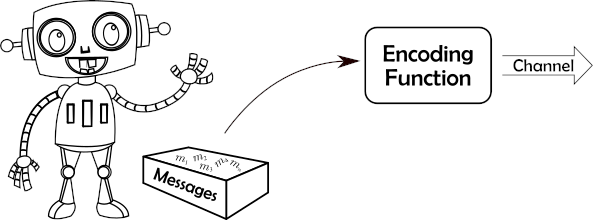
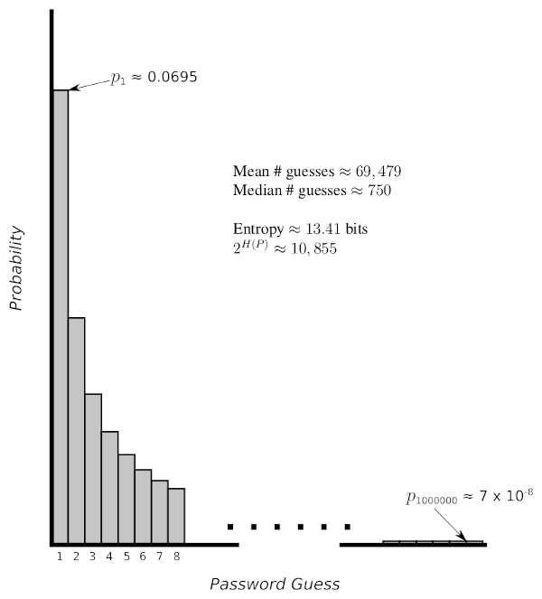

3. Entropy
The word entropy is used in several different ways in English, but it always refers to some notion of randomness, disorder, or uncertainty. For example, in physics the term is a measure of a system’s thermal energy, which is related to the level of random motion of molecules and hence is a measure of disorder. In general English usage, entropy is used as a less precise term but still refers to disorder or randomness. In settings that deal with computer and communication systems, entropy refers to its meaning in the field of information theory, where entropy has a very precise mathematical definition that measures randomness and uncertainty. Information theory grew out of the initial work of Claude Shannon at Bell Labs in the 1940’s, where he also did some significant work on the science of cryptography. The fundamental question of how information is represented is a common and deep thread connecting issues of communication, data compression, and cryptography, and information theory is a key component of all three of these areas. In honor of his work, this use of “entropy” is sometimes called “Shannon entropy.”
3.1 Entropy - Basic Model and Some Intuition
To talk precisely about the information content in messages, we first need a mathematical model that describes how information is transmitted. We consider an information source as having access to a set of possible messages, from which it selects a message, encodes it somehow, and transmits it across a communication channel.

The question of encoding is very involved, and we can encode for a variety of goals: in data compression we want the most compact encoding; for reliable transmission we see how to add extra information to support error detection or correction; and for secret communication, we want to make the encoding unintelligible to an eavesdropper. For now we focus just on how messages are selected, not how they are encoded.
How are messages selected? We take the source to be probabilistic. We’re not saying that data is really just randomly chosen, but this is a good model that has proved its usefulness over time.
Definition 3.1: A source is an ordered pair \({\cal S}=(M,P)\), where \(M=\{m_1,m_2,\cdots,m_n\}\) is a finite set, called the message space (or sometimes the source alphabet), and \(P:M\rightarrow [0,1]\) is a probability distribution on \(M\). We refer to the elements of \(M\) as messages. We denote the probability of message \(m_i\) by either \(P(m_i)\) or by the shorthand notation \(p_i\).
Intuitively, the higher the probability of a message, the lower the information content of that message. As an extreme example, if we knew in advance the message that was going to be sent (so the probability of that message is 1), then there is no information at all in that message – the receiver hasn’t learned anything new, since the message was predetermined. Extending the idea of information from a single message to a source with multiple possible messages, a source with a large message space of small probability messages will have a higher information content than a source with a small message space or a few high probability messages.
Notice that when we are discussing information content of a source, we refer to the probabilities and the size of the message space. The actual messages do not matter, so “information” in this sense is different from using “information” to refer to the semantic meaning of the messages. We can consider a function \(H\) that maps sources into a measure of information, and we use the notation \(H({\mathcal S})\) to denote information, or entropy, of a source. Since this measure only depends on the probability distribution, and not the message space, we sometimes just write \(H(P)\) for the entropy of a probability distribution. Alternatively, we can actually list the probabilities, and write this as \(H(p_1,p_2,\cdots,p_n)\). Next, we will see that the actual entropy function can be one of infinitely many choices, but the difference between the choices really just amounts to selecting different units of measurement (i.e., different scales).
3.2 Properties and Formal Definition
Using some intuition about the information content of a source, we can define several properties that any sensible information measure must satisfy.
Property H.1. \(H\) is continuous for all valid probability distributions (so small changes in the distribution result in small changes in \(H\) – no big jumps or discontinuities).
Property H.2. For uniform probability spaces, the entropy of a source increases as the number of items in the message space increases. In other words, if \(U_n\) represents the uniform probability distribution on \(n\) items (so each has probability \(1/n\)), then \(H(U_n)<H(U_{n+1})\).
Property H.3. If a message is picked in stages, then the information of the message is the sum of the information of the individual choices, weighted by the probability that that choice has to be made. For example, if we pick a playing card, the information content is the same whether we pick from the full set of 52 cards, or if we first pick the card color (red or black) and then pick the specific card from the chosen smaller set. Mathematically, this means that if our message space is made up of elements \(x_1,x_2,\cdots,x_n\) and \(y_1,y_2,\cdots,y_m\), with probabilities \(p_1,p_2,\cdots,p_n\) and \(q_1,q_2,\cdots,q_m\), respectively, and \(p=p_1+\cdots+p_n\) and \(q=q_1+\cdots+q_m\), then the entropy must satisfy
\[H(p_1,\cdots,p_n,q_1,\cdots,q_m) = H(p,q) + p H(\frac{p_1}{p},\frac{p_2}{p},\cdots,\frac{p_n}{p}) + q H(\frac{q_1}{q},\frac{q_2}{q},\cdots,\frac{q_m}{q}) .\]
Going back to our example with playing cards, we could let \(x_1,\cdots,x_n\) denote the red cards, and \(y_1,\cdots,y_m\) denote the black cards. Then \(H(p,q)\) represents the information content of selecting the card color (with probability \(p\) of picking red, and \(q\) of picking black), and then we select from either the red cards or the black cards.
Properties H.1 and H.2 are satisfied by many functions, but the following theorem shows that Property H.3 is very restrictive. In fact, since changing the base of a logarithm just scales the logarithm function by a constant factor, it turns out that there is essentially only one function (ignoring constant factors) that satisfies all three properties.
Theorem 3.2: The only functions that satisfy properties 1-3 above are of the following form, where \({\mathcal S}=(M,P)\) is a source: \[H_b({\mathcal S}) = -\sum_{m\in M} P(m)\log_b P(m) = \sum_{m\in M} P(m)\log_b \frac{1}{P(m)} , \] for some constant \(b>0\).
This is a pretty amazing result: Given some very basic properties that any measure of information must satisfy, there is essentially just one function (up to constant factors) that we can use for such a measure! This pretty much removes all doubt about whether we have the “right measure” for entropy.
Given this result, and the natural use of base two logarithms in digital communication, we define entropy as follows.
Definition 3.3: The entropy of a source \({\cal S}=(S,P)\), denoted \(H({\cal S})\) or \(H(P)\), is defined by \[H({\mathcal S}) = -\sum_{m\in M} P(m)\log_2 P(m) = \sum_{m\in M} P(m)\log_2 \frac{1}{P(m)} , \] where the unit of information is a “bit.”
Example 3.4: Consider flipping a fair coin, where the messages represent heads and tails, each with probability 1/2. The entropy of this source is
\[ H\left(\frac{1}{2},\frac{1}{2}\right) = \frac{1}{2}\log_2 2 + \frac{1}{2}\log_2 2 = \frac{1}{2} + \frac{1}{2} = 1 . \]
In other words, the entropy of a source that flips a single fair coin is exactly 1 bit. This should match your basic notion of what a bit is: two outcomes, whether heads and tails, or true and false, or 0 and 1.
Example 3.5: We generalize the previous example to the uniform distribution on \(n\) outcomes, denoted \(U_n\), so each message has probability \(1/n\). In this case the entropy is
\[ H(U_n) = \sum_{i=1}^n \frac{1}{n}\log_2 n = n \cdot\frac{1}{n}\log_2 n = \log_2 n . \]
Applying this to rolling a fair 6-sided die, we see that the entropy of one roll is \(\log_2 6\approx 2.585\) bits.
If we pick a symmetric encryption key uniformly out of \(2^{128}\) possible keys, then the entropy of the key source is \(\log_2 2^{128}=128\) bits. Since this key is most likely just a randomly chosen 128-bit binary string, this makes sense.
Example 3.6: Consider picking a 128-bit random value, but instead of a uniform random number generator, we have a biased one in which each bit chosen with \(P(0)=1/10\) and \(P(1)=9/10\). We could use the binomial distribution to give the probability of any individual 128-bit string, but in this case we can take a much simpler shortcut: Using “Property H.3” of the entropy function, we can analyze this as a sequence of 128 selections, and add the results up. In fact, since each selection (i.e., each bit) has the same probability distribution, independent of the others, the entropy of this source is just
\[ 128\cdot H\left(\frac{1}{10},\frac{9}{10}\right) = 128 \left( \frac{1}{10}\log_2\frac{10}{1} + \frac{9}{10}\log_2\frac{10}{9}\right) \approx 128\cdot 0.469 = 60.032 . \]
In other words, using a biased random number generator reduces the entropy of the source from 128 bits to around 60 bits. This can have serious consequences for security, which we’ll see below.
3.3 Entropy of English Language
One way we can view English language writing is as a sequence of individual letters, selected independently. Obviously this isn’t a great model of English, since letters in English writing aren’t independent, but this is a good starting point to think about the information content of English.
Many experiments by cryptographers and data compression researchers have shown that the frequency of individual letters is remarkably constant among different pieces of English writing. In one such study [J. Storer, Data Compression: Methods and Theory], the probability of a space character is 0.1741, the probability of an ‘e’ is 0.0976, the probability of a ‘t’ is 0.0701, and so on. From these statistics, the entropy of English (from a source generating single letters) was calculated to be 4.47 bits.
We can make our model of English more accurate by considering pairs of letters rather than individual letters (what cryptographers call “digrams”). For example, the letter “q” is almost always followed by the letter “u” (the only exceptions being words derived from a foreign language, like “Iraqi,” “Iqbal,” and “Chongqing”). Therefore, the probability of the pair “qu” is much higher than would be expected when looking at letters independently, and hence the entropy is lower for modeling pairs of letters rather than individual letters. In the same experiment described in the previous paragraph, English was modeled as a source that produces pairs of letters, and the entropy of this source model was only 7.18 bits per pair of characters, or 3.59 bits per character.
We can go even farther by considering longer contexts when selecting the “next letter” in English. For example, if you see the letters “algori” then the next letter is almost certainly a “t”, and since the “t” is “almost certain” then it contains almost no information. What is the best model for a source generating English? Shannon had a great answer for this: The mind of an adult native English speaker has been trained for years to work with English, so he used an experiment with human subjects to estimate the entropy of English. In particular, he provided the subjects with a fragment of English text, and asked them to predict the next letter, and statistics were gathered on how often the subject guessed correctly. “Correct” versus “incorrect” doesn’t fully capture information content, but can provide bounds, and using this experiment Shannon estimated the “true entropy of English” to be between 0.6 and 1.3 bits per letter. Keep in mind that this was in the 1940’s, before Shannon had computers to help with the analysis. These days we have a huge amount of English text available for analysis by modern computers, and experiments that include the full ASCII character set (rather than just letters) consistently show that entropy of English writing is between 1.2 and 1.7 bits per character.
3.4 Passwords, Entropy, and Brute-Force Searches
In the Estimation with Powers of Two section, we analyzed how long it would take a brute force attacker to find a randomly chosen encryption key (in Examples 4 and 5). Specifically, consider a randomly chosen 128-bit (or 16 byte) key, and since a brute force attacker enumerates and tries all keys, the attack succeeds after seeing half the keys on average. In other words, we need \((1/2)\cdot 2^{128}\) guesses on average, and our estimation techniques showed that this results in billions of years for a brute force search. In the subsequent section we reviewed basic probability theory, and so we can formalize the phrase “randomly chosen encryption key” to specifically mean choosing a key from the uniform distribution \(U_{2^{128}}\). Given the definitions in this section, we know that this source of keys has entropy \(H(U_{2^{128}})=\log_2 2^{128}=128\) bits. What if a key were chosen as a 16 byte (16 character) English phrase, rather than a uniformly distributed 16 byte value? Using an estimate of 1.4 bits of entropy per character, this choice of key would have only around \(1.4\cdot 16=22.4\) bits of entropy – or less entropy than choosing a 23-bit random key. You can use the estimation techniques we covered to estimate how secure a 23-bit key is, but since we already saw in Example 4 that a 40-bit key is insecure, a 23-bit key is \(2^{17}\) times - or over 100,000 times - worse!
While the previous paragraph gives a believable story of why English language keys are bad, we glossed over one point: Is a key drawn from a source with entropy \(h\) bits really the same as a key drawn from a \(h\)-bit uniform distribution from a security standpoint? In other words, how closely does entropy correspond to security? We’ll explore this question in the rest of this section, switching terminology to searching for a password rather than a key since human-selected passwords have more difficulties than randomly-selected keys.
3.4.1. Average Time to Find a Password
Consider a threat model in which the attacker is doing a brute force search for a password, trying passwords one at a time. We can put various rules on passwords, and our goal is to determine what parameters we need to use in order to achieve a certain level of security. We’ll see that if we can guarantee a certain entropy of the password selection process, then we can lower bound the average brute force time required by an attacker.
We formalize the problem by saying that there are \(n\) possible passwords (numbered \(1\) to \(n\)), and we know the probability of each one. Since the passwords themselves are not important, we can assume that they are ordered from most likely to least likely, so the probabilities of the passwords are given by \(p_1\geq p_2\geq p_3\geq\cdots\geq p_n\). A quick reality check: Does an attacker really know all these probabilities? No, of course not. But by assuming the attacker knows this very powerful information, and guaranteeing security in this perfect knowledge model, we lower bound and guarantee security in a more realistic model.
We’re searching for a single unknown password that was randomly selected according to the given probabilities, so it should be clear that the optimal attacker algorithm is to try the passwords from most likely to least likely — since we ordered our passwords from most to least likely, this means the optimal algorithm first tests password 1, then password 2, and so on. If \(G\) is a random variable denoting the number of guesses the attacker makes before finding the password, then this algorithm minimizes the expected time \[E[G] = \sum_{i=1}^n i\cdot p_i .\]
The classic analysis of \(E[G]\) and its relation to Shannon entropy comes from a 1994 paper by James L. Massey (J. L. Massey, “Guessing and entropy,” Proceedings of 1994 IEEE International Symposium on Information Theory, 1994, page 204). In honor of that paper, this quantity is sometimes called the “guessing entropy” of the probability distribution, although this term has evolved through usage rather than with a specific formal definition. Our definition seems to be the most widely used formulation, but there are other definitions – for example NIST defines “guessing entropy” in NIST Special Publication 800-63-2 differently, where their version is roughly the base two logarithm of the definition we use.
Theorem 3.7: [Massey, 1994] For any probability distribution with Shannon entropy \(H(P)\geq 2\) bits, we have \[ E[G] \geq 2^{H(P)-2}+1 . \]
In other words, while a uniformly distributed \(H(P)\)-bit source has guessing entropy \((1/2)2^{H(P)}\), or \(2^{H(P)-1}\), a non-uniform source with the same entropy is almost as good, with brute force requiring at least half as much time as a pure uniformly-distributed source with the same entropy. Looking at it in this way, we can reformulate that theorem as the following corollary.
Corollary 3.8: If \(P\) is any distribution on passwords with Shannon entropy \(H(P)\geq 2\) bits, then the average time to brute force a password requires at least as much time as brute forcing a uniformly distributed (\(H(P)-1\))-bit binary string.
Example 3.9: Let’s apply this in a very simple way, and figure out how many characters of “normal English text” is required to guarantee security at least as strong as a 128-bit uniformly distributed key. Using an estimate of 1.5 bits-per-character for English text, the corollary tells us we need \(H(P)\geq 129\) to guarantee as much security as a 128-bit key. To achieve this, you’d need at least \(129/1.5=86\) characters of normal English text. An 86 character password?!?! Clearly that’s not a very practical result!
What is wrong with the preceding analysis? The biggest issue is that people do not use regular English writing for passwords. Full English writing has a low 1.5 bits-per-character entropy estimate because it must follow grammar rules and must make sense to a reader, restricting the possible phrases that are used. People do not pick passwords this way, so what is a good entropy estimate for passwords? The question is further complicated by sites that impose requirements on passwords, such as the use of mixed case letters and numbers, that make passwords even less like regular English writing. Unfortunately, the answer to the question is “we don’t know.” Really understanding how various rules for user password selection affect security and guessability is an interesting and ongoing research problem. Work has been done on this, but results are limited by the lack of large, high quality samples of user passwords. We can still use these results in a strong way if we take “human behavior” out of the equation, as in the following example.
Example 3.10: Consider a password generator that creates \(n\)-character passwords by uniformly choosing each character from an alphabet of upper and lower case letters, digits, and 4 other symbols, where it is constrained to give at least one character from each of the 4 types of characters. The size of this alphabet is \(26+26+10+4=66\), so with no constraints a uniformly-selected password would have \(\log_2(66)>6.04\) bits of entropy per character. However, the restriction that passwords must contain one of each type of character restricts the set of passwords, reducing the entropy. Let’s see how much this affects our estimate.
With \(n\)-character passwords, there are \(66^{n}\) unconstrained \(n\)-character passwords. How many of those are missing an upper-case letter? Those are the passwords that only use the remaining 40 characters, so there are \(40^{n}\) passwords that do not contain uppercase letters. Similarly, there are \(40^{n}\) passwords that do not contain lowercase letters, \(56^{n}\) passwords that do not contain a digit, and \(62^{n}\) passwords that do not contain one of the special characters. We can lower bound the number of “allowable passwords” by subtracting these measures of bad passwords from \(66^{n}\) – note that this is only a lower bound rather than an exact count, since it subtracts too much by over-counting many of the “bad passwords” (e.g., passwords that are missing both a digit and a special character would be double-counted). In particular, if \(A(n)\) gives the number of allowable \(n\)-character passwords, we can bound
\[ A(n) > 66^{n} - 40^{n} - 40^{n} - 56^{n} - 62^{n} = 66^{n} \left( 1 - \left( 2\cdot 26^{-n} + 10^{-n} + 4^{-n}\right)\right) . \]
Since the part in the innermost parentheses is monotonically decreasing in \(n\), we can pick a reasonable lower bound for \(n\) like \(4\) to plug in and conclude that \(A(n)>0.995\cdot 66^{n}\) for \(n\geq 4\). This in turn lower bounds the entropy of choosing uniformly from allowable passwords as
\[\log_2(A(n))>\log_2 (0.995\cdot 66^{n})> \log_2(66^n)-\log_2(1/0.995) > n\cdot(\log_2 66-0.006/n) . \]
Again using the assumption that \(n\geq 4\), we see that the entropy-per-character is at least \(\log_2 66-0.0015>6.03\). In other words, our restrictions only reduced the per-character entropy by a tiny amount for reasonable (at least 4 character) passwords.
Given this, to achieve a password with strength guaranteed to be as much as a 128-bit random bitstring, we would need to pick at least \(\left\lceil 129/6.03\right\rceil=22\) characters long. While this is certainly far better than the 86 characters required of regular English text, 22 characters is still pretty long. What else can we do?
3.4.2. Improving Password Security in Other Ways
While this write-up has been all about understanding randomness, entropy, and direct application to understanding password security from an analytical perspective, there are two widely-used system security techniques that improve password security. If we are in an online setting, where the attacker must test passwords attempting a login, the common technique is to limit the number of failed attempts to a small number. If the system locks an account after 5 failed login attempts, it really doesn’t matter (much) if the entropy of the password space is 20 bits or 40 bits.
What about an offline setting, where the attacker has captured data that allows them to test passwords without actual login attempts? For example, the attacker may have stolen a list of password hashes, or the password may be used to generate a key that is used to decrypt a captured ciphertext. In these situations, techniques to reduce the speed of a brute force attack are widely used and extremely valuable. For example, PBKDF2 (Password-Based Key Derivation Function 2) is a standard technique for converting typed passwords into cryptographic keys, and has a parameter that can be used to require a significant amount of computational work to generate the key — say a tenth of a second on the fastest current processor, and a second on a slow CPU. Adding a second to the login or decryption time isn’t so bad for a user that knows the correct password, but is terrible for a brute force attacker. Our estimates for attack times in the first section used one billion tests per second as a baseline, but since PBKDF2 must be run for each potential password we’ve slowed that down to less than 10 tests per second – slowing attacks down by a factor of at least 100 million, or around \(2^{27}\) times. Informally, this is like gaining 27 bits of security. Now to achieve security equivalent to a 128-bit randomly chosen key, we only need a password source with 102 bits of entropy, or 17 characters in our example above. For security equivalent to an 80-bit key (still very secure!), we need 53 bits of entropy, or just 9 characters. This brings everything down to a very practical level for high security — as long as you’re willing to deal with 9 random characters as a password (or use a password manager that can keep track of that for you).
3.4.3. Final Notes – Lower Bound Tightness, Upper Bounds, and Other Measures
This presentation has only hit the very basics for a simple understanding of the relationship between entropy and exhaustive search. There are many issues that go beyond our introductory explanation, and we’ll give just a brief sampling of some of the issues here.
Is there a good upper bound for guessing entropy in terms of Shannon entropy? Our analysis was from the standpoint of a system designer, asking “what level of entropy do we need to guarantee a certain strength against brute force attacks?” What if we looked at it from the viewpoint of an attacker and asked “what is the worst-case expected number of guesses for a given entropy?” Massey, who proved the lower bound given above, also looked at this question and showed the expected number of guesses can be arbitrarily worse than the Shannon entropy would suggest – in other words, there is no constant factor \(c\) such that the average is upper bounded by \(c\cdot 2^{H(P)}\). This proof uses a very unnatural probability distribution, but it demonstrates the inability to provide a rigorous upper bound without some restrictions on the distribution. While there are certainly some upper bounds that can be proved (as done by, for example, R. J. McEliece and Zhong Yu, “An inequality on entropy,” Proceedings of 1995 IEEE International Symposium on Information Theory, 1995, page 329), these are generally too loose to be of much practical use.
How tight is the lower bound for real-world distributions? In the previous paragraph, we said that reasoning about the lack of an upper bound requires “a very unnatural probability distribution.” If we want absolute worst-case rigorous bounds, we need to consider such distributions, but what if we looked at distributions that are likely to occur in practice? For example, many natural processes (including normal English language word and letter distributions) follow a distribution known as Zipf’s law. The following shows what the basic (power 1) Zipf distribution looks like for a set of size 1 million, with basic statistical measures noted in the diagram.

Performing a brute force search on a uniform distribution with the same entropy would require \((1/2) 2^{H(P)} \approx 5427.5\) guesses on average, and our lower bound guarantees us that a brute force search on this distribution must take at least half as many as that (so the lower bound is approximately 2714 guesses). It turns out that the actual expected (mean) number of guesses is, as noted in the figure, over 25 times the lower bound guarantee. So while it’s nice to have a lower bound guarantee, designing to the guaranteed lower bound likely over-designs in order to achieve the rigorous guarantee.
Is “mean number of guesses” the only measure that makes sense? We have only considered the average number of guesses required to find a single password, but is this average (mean) always the right measure to consider? Consider the following situation: an attacker has obtained a list of many hashed passwords for a system, such as the 2012 security incident in which an attacker extracted millions (possibly over a hundred million) hash passwords from LinkedIn. This attacker is not trying to guess a single password, but rather is trying to uncover as many passwords as possible. Is the mean time to find a specific password really the right measure?
Consider the Zipf distribution from above again, and note that the median number of guesses for an attacker is only 750 guesses (about 1% of the mean). The mean is much higher because of the “long tail” of this distribution, but in the situation we’re considering now the median is more important. The median says that an attacker has probably 1/2 of finding the password in the first 750 guesses. If a database of 100 million hashed passwords followed this distribution, and the attacker simply tried the 750 most likely passwords for each one before moving on, they would expect to find the password for half of those accounts. In other words, trying 75 billion passwords (750 trials on each of the 100 million passwords) you would expect to find 50 million passwords! Fortunately, in the real world there are more than a million different passwords, so the median is significantly higher than 750 guesses shown for our sample distribution. Still, this demonstrates that the median is the most appropriate measure in this situation, and in fact it is extremely hard to protect a collection of passwords when a large number has been compromised as in the LinkedIn attack. System-level protections can help considerably in this situation, including the brute force slowdown techniques described above (using PBKDF2) and a technique called “salting” that is precisely for this type of attack.
© Copyright 2020–2025, Stephen R. Tate

This work is licensed under a Creative Commons Attribution-NonCommercial-ShareAlike 4.0 International License.